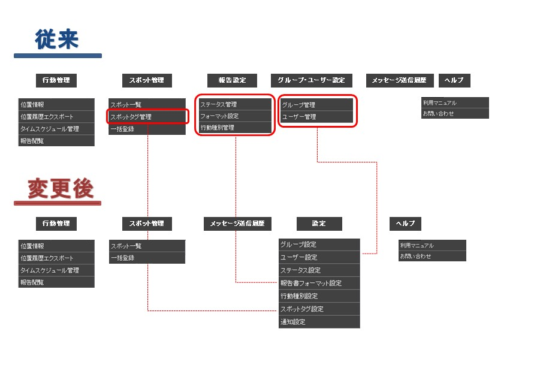
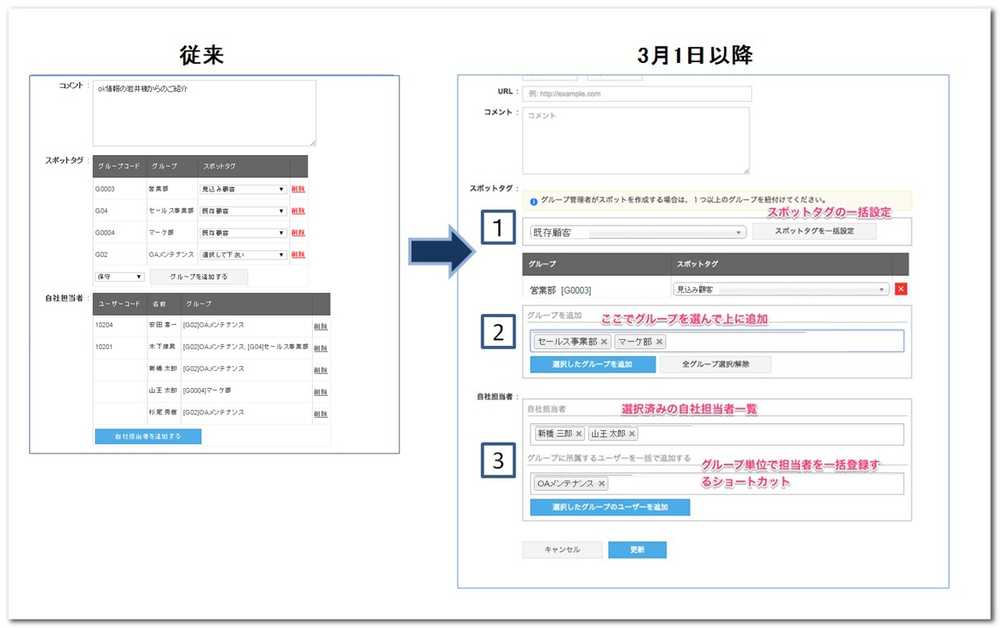

管理サイト¶
ver.2.8.3 (未リリース)2015年3月末日公開予定¶
主な変更点¶
全般¶
ユーザー設定、報告書設定などの各種設定メニューを「設定」という大項目に集約します。
管理サイトのメニュー配置は以下の図のように変更します。

スポット¶
複数のスポットタグを１つのグループ（スポットタググループ）にまとめることができるようになります。
- たとえば、見込み顧客というタグをエリアごとに設定している場合には「見込み顧客」というスポットタググループを作り、まとめることができます。
- 管理サイトやアプリでスポットを検索する際に、タグを一つずつ選択するのではなく、スポットタググループで検索できるようになります。
注釈
スポットタグは１つのスポットタググループにしか含めることができません。
また、スポットを作成する際には、従来どおり１つずつスポットタグを指定する必要があります。
位置情報¶
- 一般ユーザー も管理サイトで位置情報画面を利用できるようになります。
- メンバーの行動履歴が閲覧できるかどうかは、グループの 他メンバー情報の閲覧 設定に基きます。
報告書¶
- フィールドの仕様が一部変更になります。
| フィールドのタイプ | 変更点 |
|---|---|
| デフォルト値を空白か現在日のどちらかに設定できるようにします。 | |
| デフォルト値を空白か現在時刻のどちらかに設定できるようにします。 |
ver.2.8.2 (2015/2/27)¶
主な変更点¶
スポット¶
- グループ管理者もスポット機能が使えるようになりました。
ただし、一括登録はできません。
- システム管理者が、グループ毎に操作権限を設定できます。（参照・作成・編集）
- グループ管理者のグループに紐づくスポットのみ操作ができます。
- スポット一覧画面にソート機能を追加しました。
- 顧客コード、スポット名、所在地、作成日、更新日でソートできます。
- スポットタグ・自社担当者の操作UIを変更しました。
操作手順を簡略化でき機能を増やしたため、UIが一部変更になっています。

- 同じスポットタグを複数グループにつける場合は、まとめて追加できるようになりました。
- 自社担当者にグループ内のメンバーを、まとめて追加できるようになりました。
- スポットのコメントの文字制限を3,000文字までに変更しました。
- スポット詳細画面にて時刻表示を「秒」まで表示している箇所は、「分」までに変更しました。
位置情報¶
報告書の項目の一部を位置情報画面の地図上で表示できるようになりました。
たとえば、報告書の「見込み金額」という項目を地図上で表示させるには、以下のような手順でできるようになります。
- 報告書フォーマット設定にて、「見込み金額」を地図上に表示する設定に変更します。

- 端末で「設定の同期」を行います。
- これ以降、入力した報告書の項目「見込み金額」が地図上に表示されます。
ver.2.8.1 (2015/2/13)¶
ver.2.8.0 (2015/1/30）¶
主な変更点¶
全般¶
- 各種インポート、CSVデータ作成処理が完了した際にポップアップで通知するようになりました。
- 通信ができない場合に、オフライン警告が表示されるようになりました。
位置情報画面を自動更新表示している時に、最新情報が取得できていない状態がわかるようになります。
位置情報¶
行動履歴のCSV出力の仕組みを変更し、別途メニュー化しました。
仕組みを非同期に変更して、バックグラウンドでCSVファイルを作成します。 その間は他の操作をしながら待つことができるようになりました。 (上記の説明にある通り、処理が完了したら通知でお知らせします。）
- 行動管理のスポット検索仕様を変更しました。
スポットタグを自由入力形式から、選択形式に変更しました。
改善¶
- ブラウザでスポットタグ名をコピーすると、末尾に半角スペースが入るのを防ぐようにしました。 スポットインポートのデータ作成の際に、コピー&ペーストを利用してタグが整合性エラーになる件が解消されます。
ver.2.7.14（2015/1/13）¶
主な変更点¶
グループ管理¶
一般ユーザーの権限に、スポットの編集・削除の設定を追加しました。
グループ・ユーザー設定 > グループ管理より設定ができます。
これにより、グループに所属する一般ユーザーがアプリを利用する場合のスポットの編集・削除を制限することができるようになります。
アプリを含めた全体像については こちら をご確認ください。
グループ一括登録のCSVフォーマットにスポットの編集・削除の設定を追加しました。
CSVフォーマットの変更点については以下の表の通りです。
値を指定しない場合の初期値は全て管理者のみの権限設定になります。
CSVのフォーマットに関する説明はグループ一括登録画面に記載があります。
| 旧CSVフォーマット | 新CSVフォーマット | 変更 |
|---|---|---|
| グループコード | グループコード | 変更なし |
| グループ名 | グループ名 | 変更なし |
| ユーザー閲覧権限 | ユーザー閲覧権限 | 変更なし |
| スポット作成 | スポット作成 | 変更なし |
| スポット閲覧 | スポット閲覧 | 変更なし |
|
スポット編集 | 追加 |
|
スポット削除 | 追加 |
| 行動予定作成 | 行動予定作成 | 変更なし |
| 行動予定参照 | 行動予定参照 | 変更なし |
ver.2.7.13 (2014/12/12)¶
主な変更点¶
報告書¶
- 報告書の出力項目に「訪問日」を追加しました。
出力の位置は報告日時の前になります。
- 管理サイトで報告書を画像を編集してもアプリの「報告閲覧機能」のリストに画像が表示されない不具合を修正しました。
ver.2.7.12 (2014/11/27）¶
主な変更点¶
位置情報¶
- 日付表示を修正して分かりやすくしました。

- ユーザーの最新情報表示 時の吹き出しに経過時間を表すカラーラベルを追加しました。

- 位置情報画面で抽出した複数のメンバにメッセージを送信できるようにしました。
スポット一覧¶
- スポット詳細のデザインを変更しました。

- 設定項目が増えたためレイアウトを変更しました。
- 画面を縦に2分割しました。
- 顧客担当者をタブ化しました。
- 極力、１画面に収まるよう配慮しました。
- スポット顧客担当者の項目を追加しました。（一括登録も同様）
- スポット顧客担当者の編集画面を変更しました。
顧客担当者の設定項目が増えたため、何人かまとめて登録できるような画面にしました。
報告書ダウンロード¶
報告書の写真出力の方法を選択できるようにしました。
- ユーザー毎にフォルダを作成
- (New) 報告書毎にフォルダを作成
- (New) スポット毎にフォルダを作成
- _ 報告書の出力項目に「訪問日」を追加します。 2014年12月12日予定です。
- 出力の位置は報告日時の前になります。
ver.2.7.11 (2014/11/14）¶

{kind=link}
{kind=link}
{kind=link}
{kind=link}
{kind=link}
{kind=link}
{kind=link}
{kind=link}
{kind=link}
ver.2.7.10 (2014/10/24）¶
ver.2.7.9 (2014/10/10）¶
ver.2.7.7 (2014/9/19）¶

バージョン情報
- 管理サイト
- ver.2.8.3 (未リリース)2015年3月末日公開予定
- ver.2.8.2 (2015/2/27)
- ver.2.8.1 (2015/2/13)
- ver.2.8.0 (2015/1/30）
- ver.2.7.14（2015/1/13）
- ver.2.7.13 (2014/12/12)
- ver.2.7.12 (2014/11/27）
- ver.2.7.11 (2014/11/14）
- ver.2.7.10 (2014/10/24）
- ver.2.7.9 (2014/10/10）
- ver.2.7.8 (2014/10/3）
- ver.2.7.7 (2014/9/19）
- ver.2.7.6 (2014/9/13）
- ver.2.7.5 (2014/9/5）